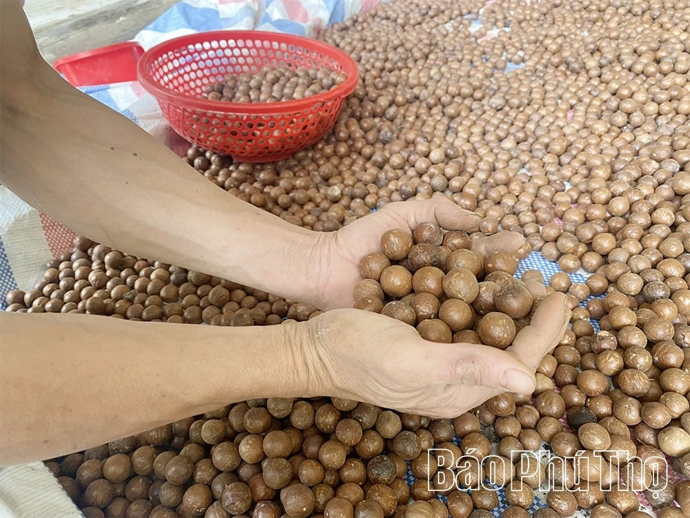

Cây mắc ca tại vùng trồng Sơn Lương, Phú Thọ. Ảnh: Báo Phú Thọ
01 / TINH THẦN TOÀN THẮNG
Giữ vị mộc. Trao chân thành.
Chúng tôi yêu hương vị giản dị của macca: lớp vỏ cứng cáp bên ngoài, phần nhân giòn thơm, béo bùi bên trong. Một hạt nhỏ cũng có thể làm nên một khoảnh khắc đáng nhớ.
Toàn Thắng mong muốn mang tinh thần ấy đến mỗi bàn trà, mỗi giờ nghỉ và mỗi món quà. Để sự quan tâm được gửi trao từ những điều gần gũi nhất.
Một chút chậm rãi để thưởng thức. Một chút chân thành để sẻ chia.
Theo bài viết của Lệ Oanh trên Báo Phú Thọ, anh Nguyễn Cảnh Toàn ở xã Sơn Lương bắt đầu trồng mắc ca năm 2019 trên 0,5 ha đất chuyển đổi từ cây keo. Từ bước thử nghiệm ban đầu, gia đình mở rộng diện tích và đầu tư vào chế biến, đóng gói để nâng giá trị hạt mắc ca.
Bài báo ghi lại sự kiên trì của người trồng và hướng phát triển nông sản gắn với điều kiện địa phương.
Anh Nguyễn Cảnh Toàn bên cây mắc ca trĩu quả tại vùng đồi Sơn Lương. Nguồn: Báo Phú Thọ

Những mẻ hạt mắc ca thu hoạch chuẩn bị sấy và phân loại. Nguồn: Báo Phú Thọ